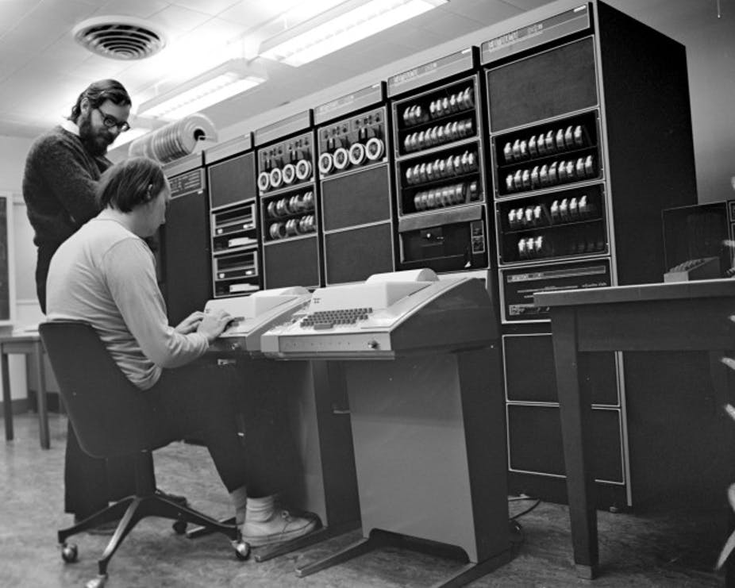

A Internet é uma rede mundial de computadores conectados. Já a Web é um serviço que funciona dentro da internet, usado para acessar sites. Ou seja, a internet é a estrutura e a web é o que usamos para navegar. Sem internet não existe web, mas existem outros serviços além dela.
A internet começou na década de 1960 com a ARPANET, criada para fins militares.
Em 1969*, ocorreu a primeira conexão entre computadores.
Na década de 1980
Em 1991, Tim Berners-Lee criou a Web.
A web usa páginas com HTML para mostrar informações.

| Ano | Evento |
|---|---|
| 1969 | Primeira conexão |
| 1991 | Criação da Web |
Relato: A internet mudou tudo, hoje usamos para estudar, conversar e acessar informações.
Link para saber mais: Clique aqui
Exemplo: na internet, usamos o protocolo HTTP1.1 para comunicação.
Outro exemplo: a evolução da web pode ser representada como Web 2.0.